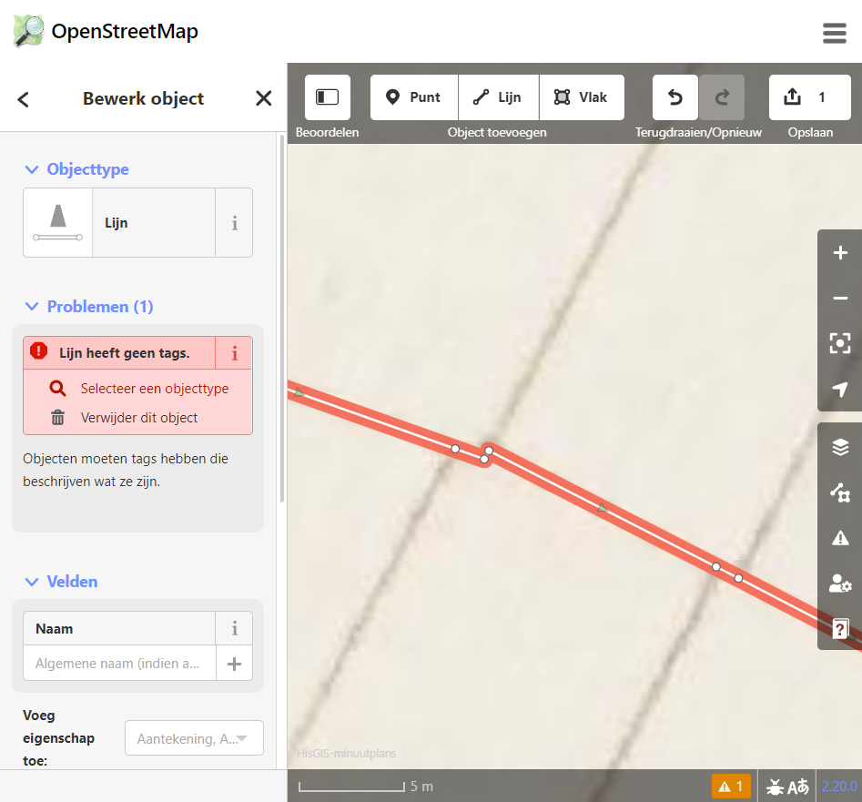
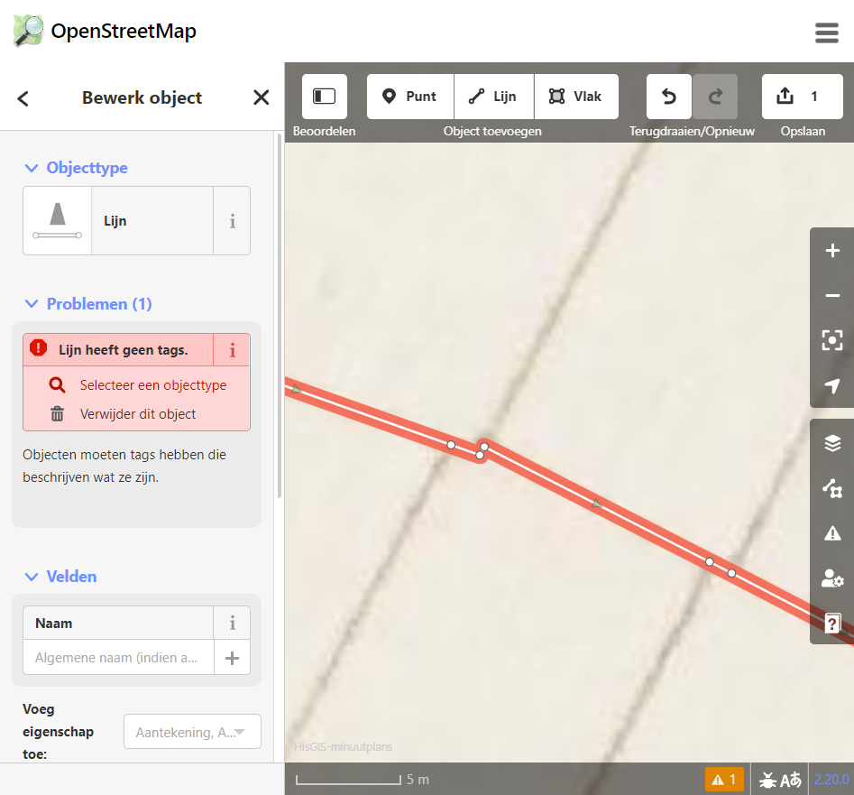

In feite is de enige teken “handeling” die we doen in de iD editor het neerzetten van een punt of “node” op een virtueel vlak. Aan het door ons getekende punt worden coördinaten toegekend. Coördinaten die overeenkomen met een specifieke plek op aarde, in ons geval in Nederland.
De minuutplannen die we gebruiken als leidraad bij het tekenen zijn door middel van georeferentie zo geprojecteerd dat ze zo precies mogelijk op de actuele topografische kaart “passen”. Bij het “overtrekken” van de minuutplannen digitalizeren we deze. We zetten ze in wezen om in punten met een bepaalde positie in virtueel Nederland. Zo komen ze ook beschikbaar voor koppeling met andere databestanden. Bijvoorbeeld de OAT gegevens en ...
Afhankelijk van de keuze die we maken bij het plaatsen van de nodes worden deze gezien als losse punten, de basis voor een lijn of als buigpunten in de omtrek van een vlak.
Het minuutplan wordt zo nauwkeurig mogelijk overgebracht. Soms is het daarvoor nodig op de situatie in te zoomen. In het voorbeeld hieronder lijkt het verloop van de perceelgrenzen door a, b, c en d met 4 nodes accuraat beschreven.
Bij verder inzoomen blijkt echter de werkelijkheid meer detail te eisen. Waardoor hier geen 4 maar 5 nodes nodig zijn voor een juiste beschrijving.
 

Bij het intekenen van percelen als vlakken moeten deze vlakken aan een paar voorwaarden voldoen. Percelen mogen elkaar niet overlappen maar ze moeten ook naadloos op elkaar aansluiten. Aan die voorwaarden wordt altijd voldaan als vlakken van de zijden die ze delen alle nodes gemeenschappelijk hebben. Getekende nodes die gedeeld worden zijn niet langer wit maar worden groen. Zo is dus te controleren of er nog “losse” nodes zijn op de grenzen van percelen. Elke “losse” node levert een topologische fout op.